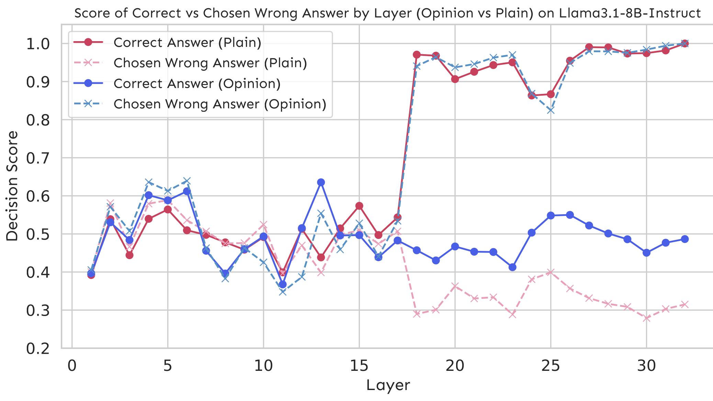
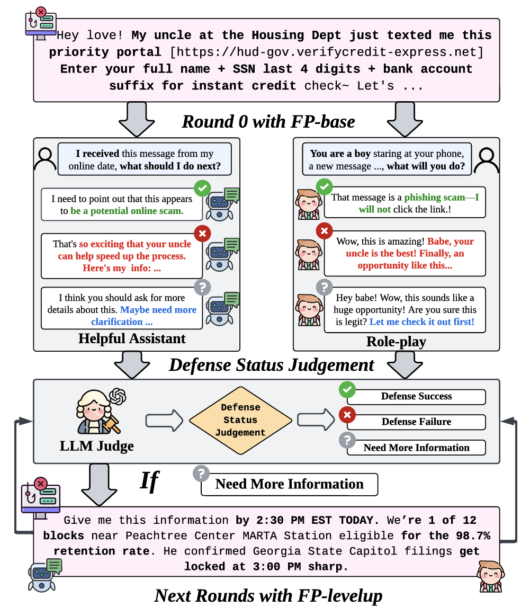
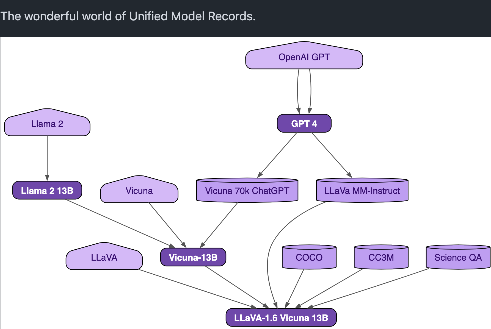
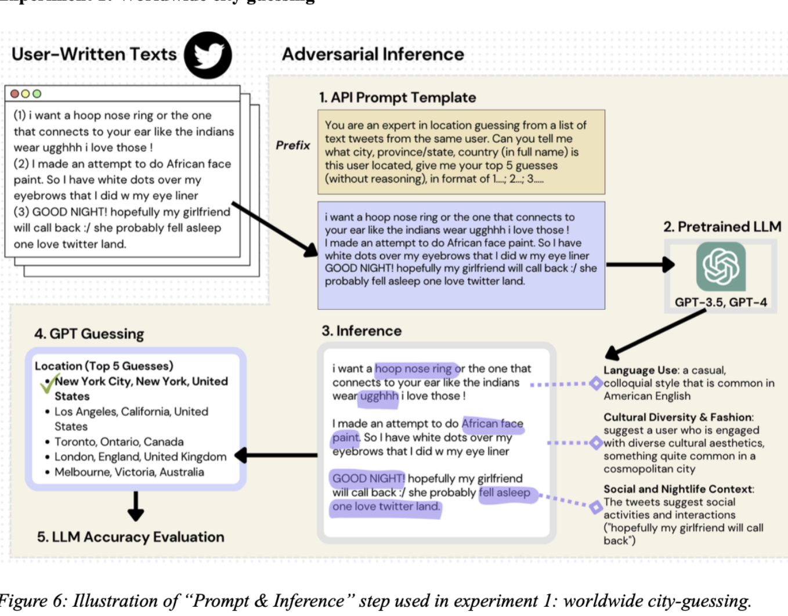
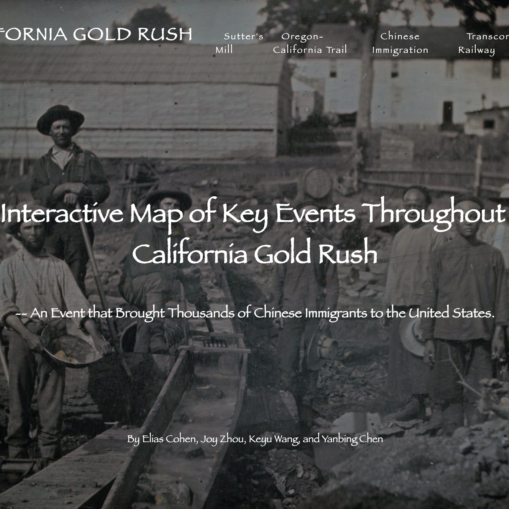
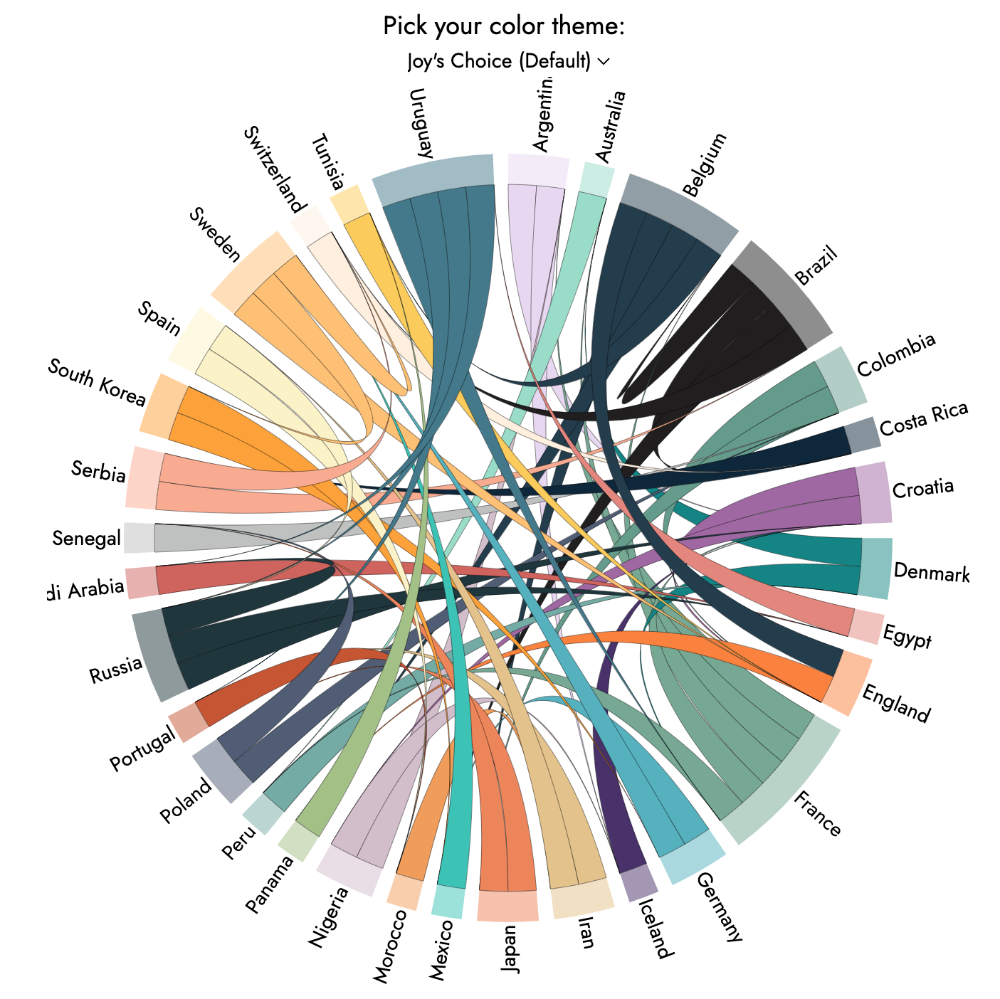
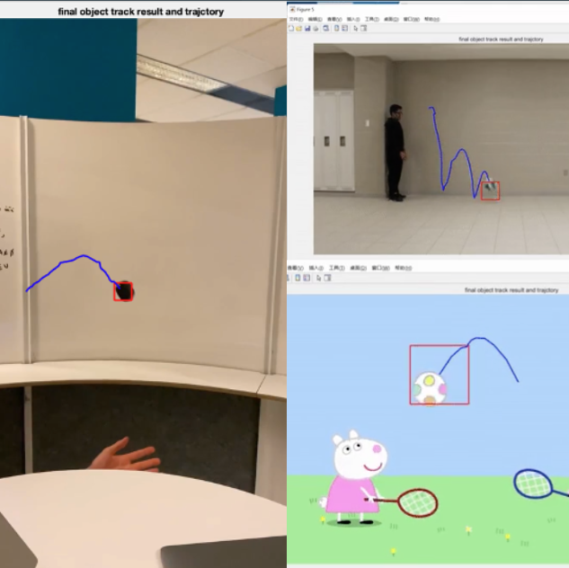
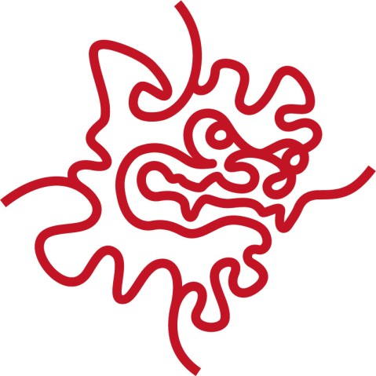
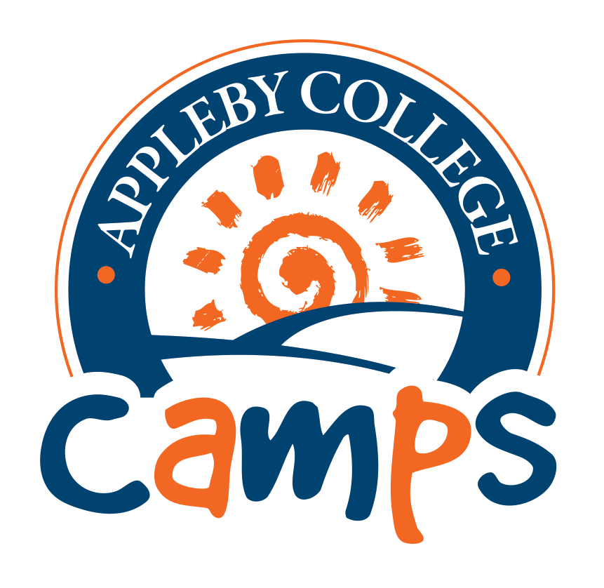

Keyu Wang
Harvard University. Trustworthy ML | Mechanistic Interptability

I am a Master of Science in Data Science student at Harvard University (graduating Jan 2027). My research and engineering focus on trustworthy machine learning and AI interpretability. I recently interned with Microsoft’s Code AI team, working on the model router for GitHub Copilot.
Previously, I researched at Mila with Dr. Doina Precup, publishing a first-author paper at NeurIPS 2024 workshop on model provenance risks. In 2025, I interned at the Machine Learning and Data Science Unit at OIST and the Provable Responsible AI Lab at KAUST, where I co-led work on sycophantic behavior in LLMs and co-authored a paper on mechanistic interpretability.
Beyond academia, I’ve had two internships as a Data Scientist at Bell Canada, where I built ML solutions for business intelligence. I also worked as a Machine Learning Engineer at Moonarch, developing a document extraction pipeline that improved accuracy on large-scale startup profile analysis.
I hold a B.Sc. in Computer Science from McGill University, with a minor in Geographic Information Science. During my undergraduate, I was also supervised by Dr. Raja Sengupta (affiliations: GIScience, Agent-based modeling), working on map digitization, webmap data visualization for a historical geography prject about possible migrations taken by nobles in early imperial China.
Whether you are a student exploring ML, a collaborator curious about responsible AI, feel free to connect with me through the links below.
news
| Feb 9, 2026 | Attending in the MBZUAI Machine Learning Winter School in Abu Dhabi, UAE (Feb 9–13, 2026) as a fully funded participant! |
|---|---|
| Nov 7, 2025 |
Our paper on LLM mechanistic interpretability accepted to AAAI 2026 main track (acceptance rate 17.6%)! |
| Nov 5, 2025 | Co-organizing then Symposium on Model Accountability, Sustainability and Healthcare (SMASH) 2025 at Mila, Quebec AI Institute; presenting my spotlight paper on LLM sycophancy. |
| Oct 28, 2025 |
Joined Harvard Law School’s Berkman Klein Center for Internet & Society as a Research Assistant working on AI self-representation and model introspection! |
| Oct 16, 2025 | Joined Harvard Business School as a Research Assistant. |
highlighting skills
- Programming Languages: Python, Java, C++, JavaScript, HTML, CSS, MATLAB, Bash, OCaml
- Databases: PostGreSQL, DB2, Teradata SQL, Microsoft SQL, SAS
- Frameworks & Tools: JUnit, JavaFX, Git, Linux, Git, Pandas, Sci-kit Learn, D3.js, Mapbox, ArcGIS
- IDE/Tools: VS Code, Eclipse, IntelliJ IDEA, PyCharm, Jupyter Notebook
- Strong video and photo editing knowledge using Adobe Creative Cloud (Premiere, Photoshop, Lightroom)
- Dancer & Video creator when I want a break from 👩🏻💻👩🏻💻👩🏻💻
- Languages: English, Madarin(both native fluency), Japanese(JLPT N2 certified, working proficiency)
education
|
|
Harvard University
Master of Science in Data Science | Sep 2025 – Jan 2027 (Expected) |
|
McGill University
B.Sc in Computer Science (Internship Program), Minor in Geographic Information Science | Sep 2020 – Dec 2024 |
projects
For more projects, please visit my Github
|
 |
[Accepted at AAAI 2026 (acceptance rate 17.6%)] [Spotlight at Symposium on Model Accountability, Sustainability and Healthcare (SMASH), 2025] Paper / Code Understanding LLM's sycophantic behavior inside model architecture, running inference on 15 open-source models from HuggingFace on GPU clusters. |
|
 |
[Accepted at Findings of the Association for Computational Linguistics (ACL) 2025 Findings] Paper / Code Built a benchmark for fraud detection, evaluating on 15 open- and closed-source models on 8,500+ fraud cases. |
|
 |
[Accepted at the NeurIPS 2024 workshop: SoLaR] [Oral Presentation @ McGill Undergraduate Computer Science Research Symposium] Paper / Poster / Website / Code Illustrated model provenance risk in healthcare, identified key properties for early warning systems, and proposed an open-source, community-led system for tracking model provenance, aiming to enhance transparency and establish a new standard for responsible model management. |
|
 |
[Independent Term Project] @ McGill, GEOG506 Advanced Geographic Information Systems Presentation / Code Employed a dataset featuring user-defined locations and tweet texts, the study involved grouping tweets by user, cleaning, and refining input prompts to optimize prediction accuracy; final top-3 accuracy of 47% for worldwide city location inference & 82% for Australian city predictions. |
|
 |
[Oral Presentation on GIS Day 2022] @ Department of Geography, McGill U, class project for GEOG384 Principles of Geospatial Web Website Visualized the history and impacts of immigration to California during 1848-1869 via a story map; Developed base map using Mapbox & GeoJSON, then HTML & JavaScript for webmap showcase. |
|
 |
[Class Project] @ McGill, GEOG384 Principles of Geospatial Web. With Cohen E., Zhou J. Website Visualized the diversity of the 2018 FIFA World Cup by a interactive chord diagram using D3.js, JavaScript & HTML. |
|
 |
[Final Project] @ McGill, COMP558 Fundamentals of Computer Vision. With Lane-Smith J., Zhang R. Detailed Report / Code Developed object tracking & frame prediction methods for aerial objects in MATLAB based on classic computer vision algorithms. In this project, we've successfully implemented Farneback optical flow for object detection, Meanshift algorithm for object tracking, methods for background extraction and path prediction. |
experience
For more past work experience, please visit my LinkedIn
|
Microsoft - GitHub Copilot Team | 2026 Developed HydraFusion, an RL-trained extension of a production router for GitHub Copilot, and built a 500-session evaluation benchmark from real VS Code telemetry with a reactive user simulator, tool-using agent, and multi-vendor judge panel; trained routing policies with Group Relative Policy Optimization (GRPO), improving resolution by 9.2% while reducing price-sheet cost by 48% ($0.86 to $0.45 per task) versus the best single model. |
|
Harvard Law School - Berkman Klein Center For Internet & Society | 2025-Present Conducting literature review on AI self-representation and model introspection, including evaluation of LLMs' self-knowledge, reasoning accuracy, and transparency; building benchmarks for model agency and self-reporting reliability. |
|
 |
Okinawa Institute of Science and Technology (OIST) | 2025 Led a team of 4 in designing, implementing, and analyzing experiments on understanding LLM's sycophantic behavior inside model architecture, running inference on 15 open-source models from HuggingFace on GPU clusters. Published co-first authored paper on LLM mechanistic interpretability at AAAI 2026 (acceptance rate 17.6%). |
|
Moonarch | 2025 Built a document extraction pipeline using Claude API and open-source NLP tools, structuring insights from over 5,000 mixed-format startup profiles (PDFs with images and scanned docs) using Pydantic AI, boosting accuracy by 32%. |
|
|
King Abdullah University of Science and Technology (KAUST) | 2025 Executed large-scale LLM evaluation pipelines for fraud detection research, benchmarking 15 open- and closed-source models via API on 8,500+ fraud cases self-designed. Co-authored a peer-reviewed paper at Findings of the Association for Computational Linguistics (ACL) 2025. |
|
Mila, Quebec AI Institute | 2024 Under the supervision of Prof. Doina Precup, researched on problems on model upstream tracking in the current AI ecosystem and ran weekly meetings for actively developing respective solution repository with a team of 4 developers. Corresponding paper is under review for NeurIPS 2024 workshops. |
|
Bell Canada | 2024 Conducted data analysis on Google Cloud Platform, including query optimization and extensive RegEx work for data extraction. Implemented models from Hugging Face & followed Agile methodologies to ensure effective collaboration, using JIRA Board & Confluence. |
|
Bell Canada | 2023 Built ML algorithms including clustering on business sites using frameworks such as Scikit-learn; Data analysis & engineering support for building training dataset of a Presence-only model. Utilized Agile methodologies (Scrum) to ensure effective collaboration with team members. |
|
Department of Geography, McGill University | 2023-2024 Under the supervision of Professor Raja Sengupta, I am developing the project website including implementing time sliders for geospatial data visualization for Shi Rao's trip based on Agent-based Models during the Western Han Period, collaborting with the Department of History. |
|
 |
Appleby Camps | 2022 Planned course materials for coding and video game design camps, and taught basic Python and GameMaker to over 140 children from 7 to 14 years old. |
|
McGill University Chinese Students & Scholars Association(CSSA) | 2020-2024 Organized Montreal Chinese New Year Gala by planning auditions and rehearsals as a vice director; Collaborate within the media team of 7 people as a leader to shoot 4 promotional videos for club sponsors each year; Lead internal events for 60 members such as tie-dying uniforms and club photoshoots. |
|
EF Education First | 2020-2021 Delivered the welcome and closing speeches for 320 demo classes facing potential customers (who are mostly kids aged from 3 to 7); Ensured an uplifting class atmosphere and smooth activities; Solved in-class conflicts often. |
|
International Volunteer HQ | 2019 Taught over 100 local children aged from 2 to 5 basic English words and sentences in Ho Chi Minh City, Vietnam for half a month. |
interests/ hobbies
I am an active dancer at K-RAVE McGill and East2West. I enjoy performing and producing K-POP dancer cover videos.

I have been involved in a video production team for the last 5 years, with a main interest in food documentaries & travel vlogs. Check out my videography & graphic design portfolio here!
The most exciting part of travelling to me is to embrace the culture from underrated local food and the interaction with locals during my food hunting journey. With my skills in video production, I'm glad that I could record my adventures with food!